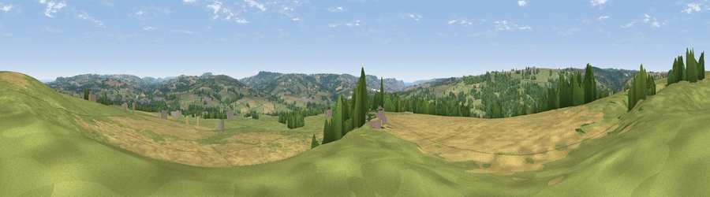

Viewpoint near Tytherleigh
#17667 in England · top 40% of its area beats it · near Tytherleigh · access?Where it is
The exact computed spot (ST 31825 04075). Click the marker for map links.
Public access: no public right of way or access land is recorded at this exact spot — it may be on private land. Computed from Natural England's CRoW access layer and OpenStreetMap rights of way — not the legal definitive map. Always verify locally.
The view, rendered

A 360° render of this exact spot computed from the terrain model, tree cover and land cover — summer colours, afternoon light, calibrated against photographs of famous viewpoints. Real trees, hedges and buildings will differ in detail.
The panorama
Grey silhouette: terrain skyline in each direction (720 bearings, Earth curvature and refraction included). Dashed green: skyline with trees (+15 m) and buildings (+8 m) as obstacles. Blue strip: how far the ground is visible on each bearing.
Where the view opens
Wedge length = distance to the farthest visible ground on that bearing (vegetation-aware). Rings at 10, 25 and 50 km.
What fills the view
52% grassland · 34% cropland · 13% woodland ·
Angular shares of the visible panorama (visual magnitude), not map area. Landscape diversity 0.44 (0–1 Shannon).
Key numbers
More beautiful places nearby
The staircase of upgrades: each row has a higher view potential than everything closer. Driving times are estimates from straight-line distance, calibrated against real road routing — check an actual route before setting out.
| Place | Direction | Drive | Score |
|---|---|---|---|
| Viewpoint near Chard | NNW · 4 km | ~8 min | 58.6 |
| Viewpoint near Membury | WNW · 4 km | ~9 min | 65.0 |
| Viewpoint near Marshwood | SE · 7 km | ~15 min | 72.2 |
| Lambert's Castle Hill | SE · 7 km | ~15 min | 78.7 |
| Viewpoint near Burstock | ESE · 10 km | ~19 min | 81.8 |
| Lewesdon Hill | ESE · 12 km | ~23 min | 83.3 |
| Golden Cap | SE · 15 km | ~27 min | 88.7 |
| The Knoll | SE · 27 km | ~43 min | 91.0 |
50.83218, -2.96944 · source: screening · position refined by local search. Computed location — check access rights before visiting.